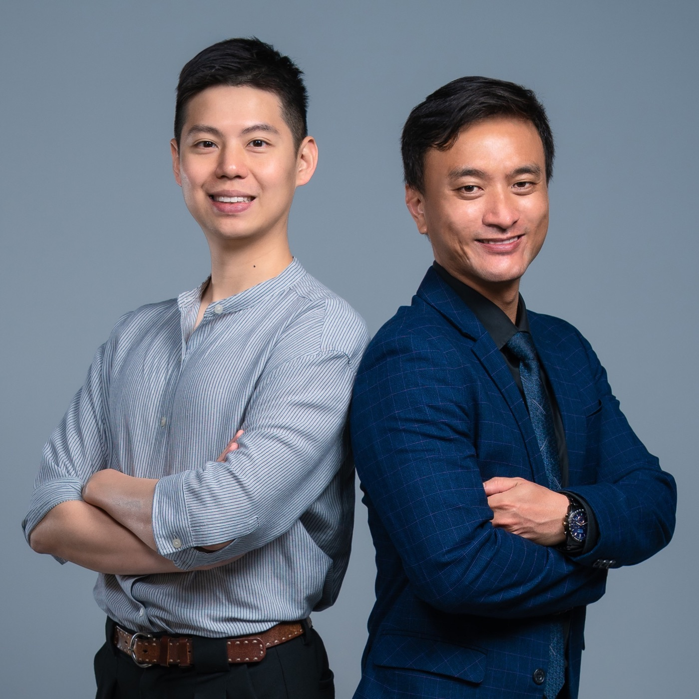

Founder / Editor-in-Chief
潘若凡 博士
英國曼徹斯特大學博士、台大護理學士，曾任職於台大醫院急診室一線，並具醫藥國際貿易、醫療器材代理與內容創業經驗。
- 擅長從商業開發與授權交易角度拆解資產價值
- 追蹤大藥廠交易邏輯、臨床里程碑與資本市場敘事
- 負責 Drugnews 選題、長文架構與讀者溝通節奏
團隊
Drugnews 由潘若凡博士與林詮盛博士共同打造，結合臨床醫學、產業研發、商業開發與資本市場視角，讓生技醫藥內容不只是新聞摘要，而是能支撐讀者判斷的研究材料。

我們關心的是同一件事：把資訊高度不對稱的生技醫藥產業，拆成可以被檢查、比較與追蹤的判斷框架。
英國曼徹斯特大學博士、台大護理學士，曾任職於台大醫院急診室一線，並具醫藥國際貿易、醫療器材代理與內容創業經驗。
具長庚大學與歐盟生醫雙博士背景，擁有超過 15 年生技醫藥全鏈條實戰經驗，曾任中天生技集團藥物開發主管、慕恩生物科學長。
差異化
我們不只整理新聞，也不只做社群懶人包。Drugnews 的文章會把機制、臨床證據、製造與法規、競品格局、授權交易與估值邏輯放在同一個判斷框架裡，幫讀者看懂一家公司真正會被重新定價的原因。